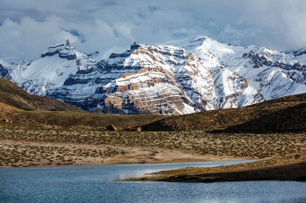
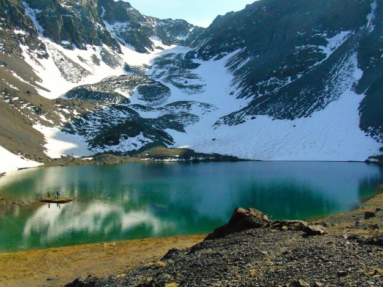

📍 1. Historia y Ubicación

- Ubicación: Región Áncash, Perú.
- Declarado Parque Nacional en 1975.
- Reconocido como Patrimonio Natural de la Humanidad por la UNESCO en 1985.
🏔 2. Paisaje y Naturaleza

- Hogar de la Cordillera Blanca, la cadena montañosa tropical más alta del mundo.
- Incluye el nevado Huascarán, la montaña más alta del Perú (6,768 m).
- Más de 600 glaciares y 300 lagunas de origen glaciar.
🌱 3. Biodiversidad y Cultura

- Hábitat de especies como el cóndor andino, el oso de anteojos y la vicuña.
- Zona de gran importancia para comunidades altoandinas.
- Espacio de tradición, rituales y conexión con la naturaleza.
🚶 4. Importancia Turística

- Destino internacional para montañismo y trekking.
- Rutas famosas: Laguna 69, Pastoruri, Llanganuco.
- Un paraíso natural para la aventura y el ecoturismo.